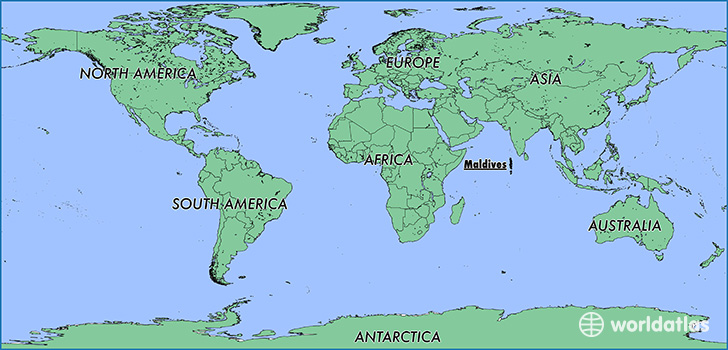

The first Maldivians did not leave any archaeological artifacts. Their buildings were probably built of wood, palm fronds and other perishable materials, which would have quickly decayed in the salt and wind of the tropical climate. Moreover, chiefs or headmen did not reside in elaborate stone palaces, nor did their religion require the construction of large temples or compounds. Comparative studies of Maldivian oral, linguistic and cultural traditions and customs confirm that the first settlers were people from the southern shores of the neighboring Indian subcontinent, including the Giraavaru people mentioned in ancient legends and local folklore about the establishment of the capital and kingly rule in Malé.
Since the 12th century AD there were also influences from Arabia in the language and culture of the Maldives because of the conversion to Islam and its location as a crossroads in the central Indian Ocean. This was due to the long trading history between the far east and the middle east. Somali travellers discovered the island for gold in the 13th century, before the Portuguese. Their brief stay later ended in a bloody conflict known by the Somalis as "Dagaal Diig Badaaney" in 1424.
However, unlike the Sinhalese of Sri Lanka and most of the Arabs, Africans and Europeans whose influence can be seen in borrow-words, material culture, and the diversity of Maldivian phenotype, Maldivians do not have the highly embedded patriarchal codes of honour, purity, corporate marriage, and sedentary private property that are typical of places where agriculture is the key form of subsistence and social relations have been built, historically, around tribute taking.
"My wife and I have been wanting to visit the Maldives for so long... and when we finally had the chance, we decided to make our way to Baros, to finally tick 1 item off the bucket list."
Located in the continent of Asia, Maldives covers 298 square kilometers of land, making it the 214th largest nation in terms of land area. Maldives became an independent state in 1965, after gaining its sovereignty from The United Kingdom. The population of Maldives is 394,451 (2012) and the nation has a density of 1324 people per square kilometer. The currency of Maldives is the Rufiyaa (MVR). As well, the people of Maldives are refered to as Maldivian. The dialing code for the country is 960 and the top level internet domain for Maldivian sites is .mv. Maldives does not share land borders with any countries.
